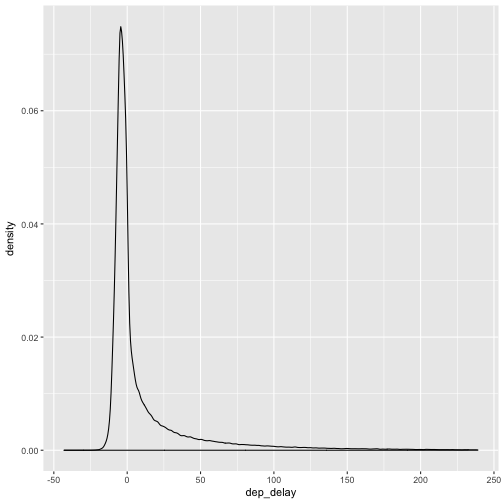

Advanced work with dplyr, ggplot, tidyr
Load in required packages and data:
library(dplyr)
library(tidyr)
library(nycflights13)
library(ggplot2)
data(flights)
Filter out large delays:
flights <- flights %>% filter(dep_delay < 240)
Function summarise_each
Great to work apply the same summary functions on different variables.
flights %>% select(dep_delay, arr_delay) %>%
summarise_each(funs(mean))
## `summarise_each()` is deprecated.
## Use `summarise_all()`, `summarise_at()` or `summarise_if()` instead.
## To map `funs` over all variables, use `summarise_all()`
## # A tibble: 1 x 2
## dep_delay arr_delay
## <dbl> <dbl>
## 1 11.21618 NA
# remove missing values from the calculation
flights %>% select(dep_delay, arr_delay) %>%
summarise_each(funs(mean(., na.rm=TRUE)))
## `summarise_each()` is deprecated.
## Use `summarise_all()`, `summarise_at()` or `summarise_if()` instead.
## To map `funs` over all variables, use `summarise_all()`
## # A tibble: 1 x 2
## dep_delay arr_delay
## <dbl> <dbl>
## 1 11.21618 5.479534
# using the helper function matches()
flights %>%
summarise_each(funs(mean(., na.rm=TRUE)), matches("delay"))
## `summarise_each()` is deprecated.
## Use `summarise_all()`, `summarise_at()` or `summarise_if()` instead.
## To map `funs` over a selection of variables, use `summarise_at()`
## # A tibble: 1 x 2
## dep_delay arr_delay
## <dbl> <dbl>
## 1 11.21618 5.479534
Package tidyr
The package tidyr is great for manipulating data from long to wide, or from
wide to long form. Here
you can find a broader introduction, we are going
to use only the gather() and the spread() function.
flights %>% ggplot(aes(x=dep_delay)) + geom_density()

If we would like to plot more variables on the same plot, it is best to first
collect them into one with gather() and then map the type into a new dimension
of the graph (say, color). Here we plot the distribution of the arrival and
departure delay on the same plot.
flights %>% gather(delay, value, dep_delay, arr_delay) %>%
ggplot(aes(x=value, fill=delay)) + geom_density(alpha = .3)
## Warning: Removed 1160 rows containing non-finite values (stat_density).
The package could be used for creating nice summary tables as well. See an illustration below, where we first gather the variables we would like to use, and apply several summary functions after grouping them by their types. (It may help to understand the command below step-by-step, by looking at the intermediate results).
flights %>%
gather(measure, value, dep_delay, arr_delay, air_time, distance) %>%
select(value, measure) %>%
filter(!is.na(value)) %>%
group_by(measure) %>%
summarise_each(funs(mean, median, min, max, sd))
## `summarise_each()` is deprecated.
## Use `summarise_all()`, `summarise_at()` or `summarise_if()` instead.
## To map `funs` over all variables, use `summarise_all()`
## # A tibble: 4 x 6
## measure mean median min max sd
## <chr> <dbl> <dbl> <dbl> <dbl> <dbl>
## 1 air_time 150.718955 129 20 695 93.71625
## 2 arr_delay 5.479534 -5 -86 350 39.00446
## 3 dep_delay 11.216184 -2 -43 239 33.82669
## 4 distance 1048.776583 888 80 4983 736.09479
For loop and ggplot
If you would like to create the same plot for different variables, you may want
to use loops instead of typing in the same thing again and again. However,
looping over variable names is tricky. It is better to loop over the names as
strings, and using the aes_string() function within ggplot() as illustrated
in this example.
for (var in c("dep_delay", "arr_delay")) {
flights %>%
ggplot(aes_string(x=var)) +
geom_histogram()
# ggsave(paste(var, "_hist.png")) # you can save them within the loop
}